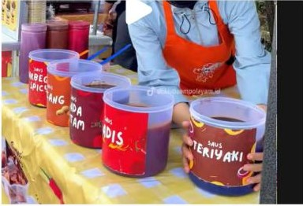

Tiga sempol
Tiga pendiri bekerja bersama dengan satu tujuan membangun usaha yang bermanfaat dan berkembang.
Trio Sempol adalah usaha kuliner mahasiswa yang mengutamakan rasa, kualitas, harga terjangkau, dan pelayanan ramah untuk setiap pelanggan.

Pesan untuk slot antar yang tersedia. Kuota harian mengikuti kapasitas produksi dan dapat berubah saat pemilik menutup PO.
Jam ini mengikuti jadwal kegiatan tim yang diberikan. Slot antar yang benar-benar tersedia akan muncul saat memilih tanggal pemesanan.
Logo Trio Sempol adalah simbol semangat, perjuangan, dan kebersamaan tiga pendiri yang memiliki satu tujuan: membangun usaha yang bermanfaat, terus berkembang, dan memberi pengalaman terbaik bagi pelanggan.
Bentuk cup menggambarkan produk yang praktis dan modern, sekaligus wadah bagi ide, kreativitas, dan kerja sama. Warna merah membawa semangat dan keberanian; putih menegaskan kejujuran, ketulusan, dan kebersihan; emas menjadi lambang harapan, optimisme, dan cita-cita untuk terus maju.
Setiap unsur logo mengingatkan kami pada cara membangun usaha dan melayani pelanggan.
Tiga pendiri bekerja bersama dengan satu tujuan membangun usaha yang bermanfaat dan berkembang.
Konsep sajian yang praktis dan modern, sekaligus ruang untuk kreativitas serta kerja sama.
Semangat, keberanian, kerja keras, dan tekad untuk bertumbuh menghadapi tantangan.
Kejujuran, ketulusan, kebersihan, serta komitmen menjaga mutu produk dan pelayanan.
Harapan, optimisme, kesuksesan, dan cita-cita besar Trio Sempol di masa depan.
Menjadi usaha kuliner mahasiswa yang kreatif, inovatif, dan terpercaya dengan menghadirkan produk berkualitas serta mampu memberikan pengalaman terbaik bagi pelanggan.
Tanpa akun juga bisa. Tinggal pilih, isi detail, lalu simpan kode pesananmu untuk cek status kapan saja.
Campur saus sesukamu. Stok sisa ditampilkan langsung pada menu.
Masukkan nama, WhatsApp, dan alamat antar. Ongkir dihitung otomatis.
Scan QRIS, unggah bukti, lalu simpan struk dan kode pesananmu.
Teman kecil untuk mood yang besar.
✳